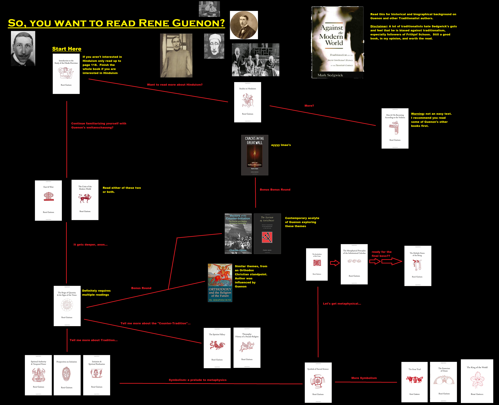

Rene Guénon
Born on November 15, 1886, in Blois, France, René Guénon was a renowned metaphysician, writer, and founder of the Traditionalist School. His life was a testament to his profound understanding of metaphysics and traditional philosophy, to which he dedicated his life.
Early Life and Education
Guénon's early life was marked by a deep interest in mathematics and philosophy. He studied at the University of Paris, where he was introduced to the works of various philosophers and spiritual traditions. His intellectual curiosity led him to explore the depths of Eastern philosophies, particularly Hinduism and Sufism, which would later form the basis of his Traditionalist philosophy.
Sufi Initiation and Life in Egypt
In 1912, Guénon was initiated into the Sufi order, marking a significant turning point in his life. He moved to Egypt in 1930, where he spent the rest of his life studying and writing about traditional metaphysics and spirituality. His works, including "The Reign of Quantity and the Signs of the Times" and "The Crisis of the Modern World," are considered seminal texts in the field of Traditionalist philosophy.
Guenon's Philosophy
Guenon's philosophy is rooted in the concept of "Tradition," which he understood as the perennial wisdom underlying all religions and spiritual paths. He believed that this wisdom, which transcends cultural and historical differences, is the ultimate truth and the key to understanding the universe.
Guenon criticized the modern world for its materialism and lack of spiritual depth. He argued that modernity has led to a "reign of quantity," where material success is valued over spiritual growth. He believed that this has resulted in a spiritual crisis, which can only be resolved by returning to traditional wisdom.
Guenon also emphasized the importance of initiation in spiritual development. He saw initiation as a transformative process that leads to a deeper understanding of the divine and the self. He believed that without initiation, spiritual knowledge remains theoretical and disconnected from lived experience.
Reading Guide
- "Introduction to the Study of the Hindu Doctrines" - This book serves as a good starting point for understanding Guénon's philosophy. It introduces the concept of Tradition and explores the metaphysical principles of Hinduism.
- "The Crisis of the Modern World" - This book provides a critique of modernity from a Traditionalist perspective. It is essential for understanding Guénon's views on the modern world and its spiritual crisis.
- "The Reign of Quantity and the Signs of the Times" - This book delves deeper into the problems of modernity, focusing on the dominance of quantity over quality in modern thought.
- "Symbols of Sacred Science" - This book explores the symbolic language of Tradition, providing insights into the metaphysical principles underlying traditional symbols.
- "Insights into Islamic Esoterism and Taoism" - This book provides a comparative study of Islamic and Taoist esotericism, highlighting the universal principles of Tradition.
To fully understand Guénon's works, it is important to approach them with an open mind and a willingness to engage with complex metaphysical concepts. His writings are dense and require careful reading, but they offer profound insights into the nature of reality and the spiritual path.

Browse his works
-

The Crisis of the Modern World
René Guénon